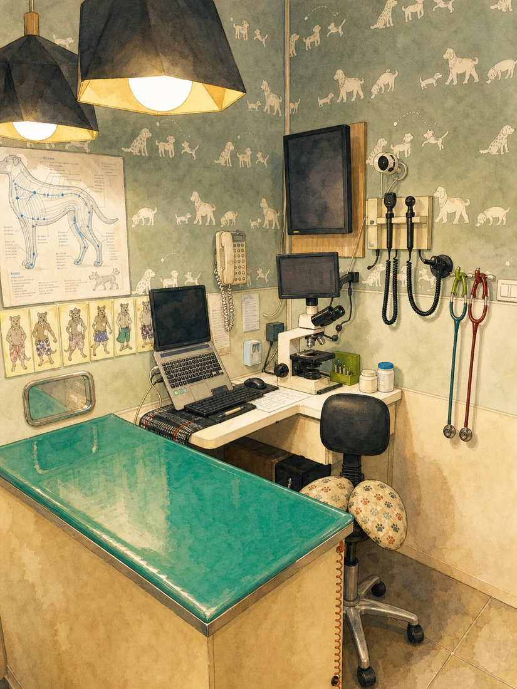
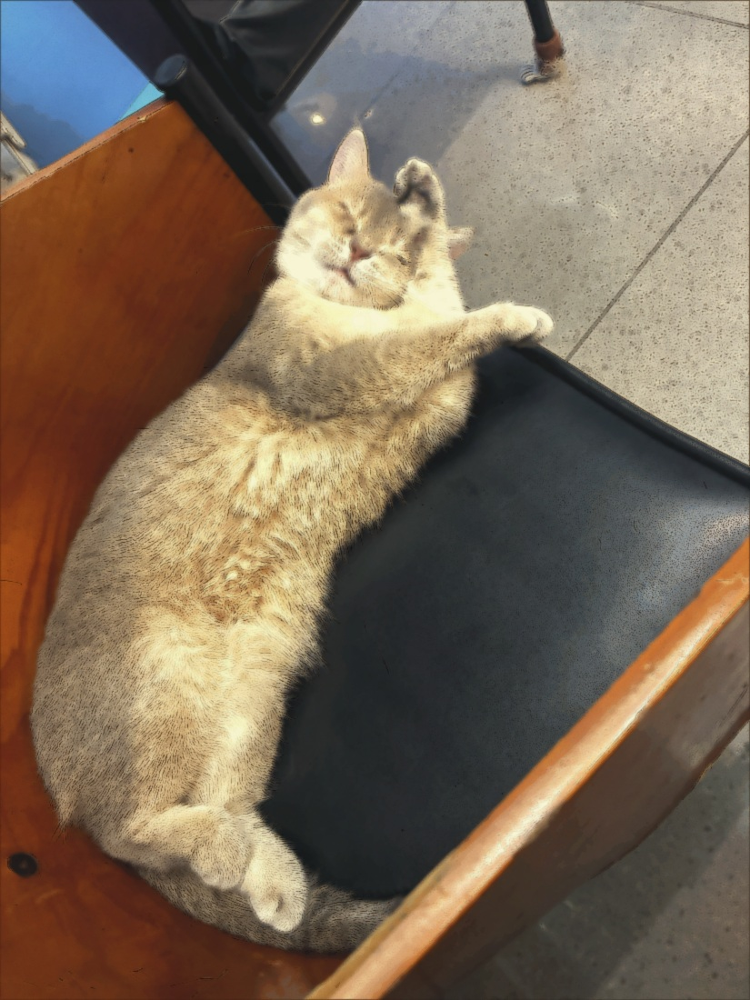
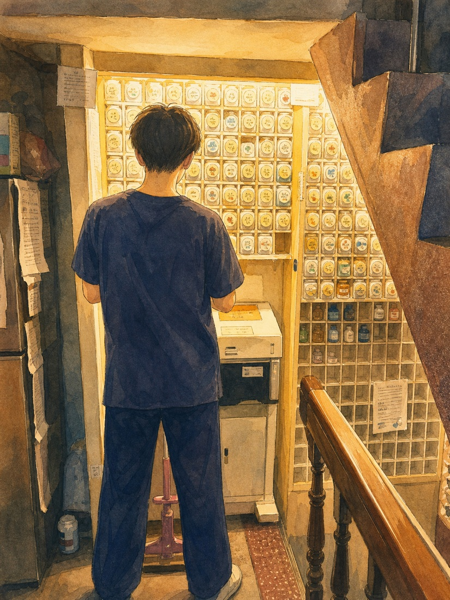

醫療服務
從一般門診到手術、牙科、預防照護與回診追蹤，陪伴毛孩每個生命階段。
醫療服務
內科、影像、血檢與外科手術經驗搭配院內設備，讓診斷與治療更有效率。
院長以日式細心流程把關每一步，並提供清楚的回診與居家照護建議。

醫療服務
清潔與修剪採分流動線安排，降低與病患交叉，也方便觀察皮膚與毛髮狀況。
照護重點放在皮膚健康、毛髮清潔與舒適度；若發現異常，會建議銜接醫師評估。

醫療服務
院內配藥銜接看診後的治療計畫，依毛孩狀況、體重與用藥需求清楚說明。
慢性病、高齡照護或術後恢復，透過回診諮詢讓照護計畫穩定接續。
